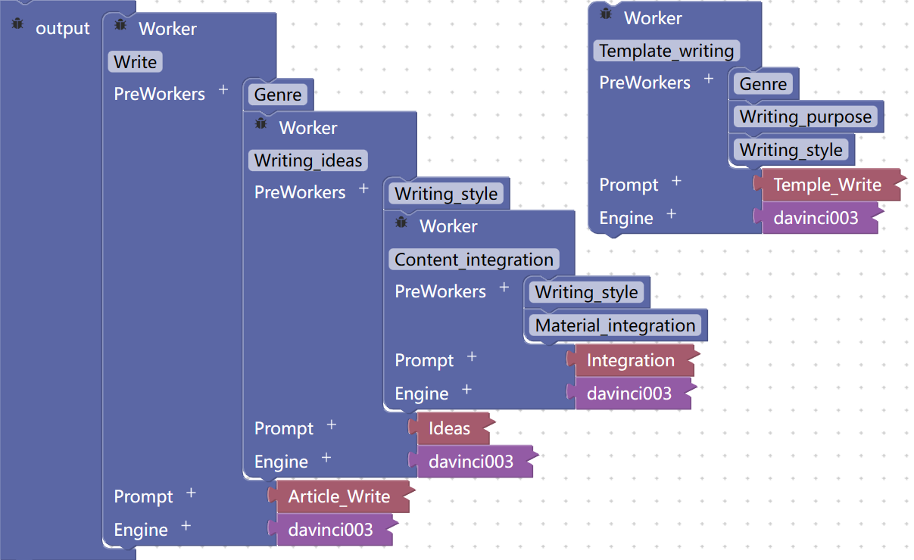

Qing Xiao Xie--Your breakthrough in traditional text generation assistant
Author:Haisen Hu
Restructuring the new pattern of text writing with front-end AI software.
Preface
The launch of ChatGPT has sparked an AI frenzy. As the most powerful natural language processing model in the world today, ChatGPT plays a huge role in the hands of countless developers.
When I first used ChatGPT to write an article, I was truly impressed by the quality of the article it produced!
How amazing the article it produced is!üëç
As a natural language processing model, ChatGPT's ability to generate text can quickly complete a large amount of document work, thus greatly improving work efficiency. With the support of ChatGPT, a complete article that meets requirements can be completed with just a few clicks. However, when I using ChatGPT to generate text, it is often difficult to achieve the desired effect quickly, so I need to debug or guide ChatGPT. So, how can I better use ChatGPT to generate articlesÔºüü§î
Against the background of discussing issues related to text generation, we all know that when using ChatGPT, it is necessary to provide targeted prompts and guide the AI to generate text that meets expectations through multiple interactions. Although this method can reduce repetitive work, it also increases the burden and complexity of operations such as providing prompts. Moreover, for users without deep technical basis, writing correct and effective prompts requires high professional knowledge, which also limits the use of AI technology, making many people seem to be distant from AI. However, I have good news: a brand-new text generation method is entering our lives and continuously demonstrating its value through continuous exploration and breakthroughs. Now let me demonstrate to you my AI magic tool - Qing Xiao Xie!üòé
I will never tell you that this icon was also generated by AI(LOLüòùüëç).
This is "Qing Xiao Xie", an AI application dedicated to text generation. Due to its powerful text generation ability, Qing Xiao Xie is widely used in professional fields that require a large amount of document work. By using it, you can automatically generate complete and usable text with just a small amount of information provided. This has improved the efficiency and quality of document work, and has gradually brought great convenience and pleasure to many people who feel the support of AI technology. Perhaps you may wonder if I am digressing. What does this have to do with building AI applications without code? Don't rush, Now I will reveal the secret of how I built such an AI program without writing a single line of code!
Sapper and Exploration of Qing Xiao Xie
Sapper
The web interface of Sapper
I believe you must be very confused about what Sapper is when you see this. So now I want to introduce to you the Sapper that I used. Sapper is an AI integrated development environment (IDE) designed for non-computer professionals. This tool supports no-code programming and graphical drag-and-drop development, and was officially launched in March 2023. Sapper is like a production line for artificial intelligence products, which can help people develop various AI applications in a short period of time, provide rapid services to society, and bring incalculable market economic value. It can enable AI to better integrate into everyone's life, improve people's work efficiency, and promote local economic growth.ü§©
That's why I can achieve a practical AI application without writing a single line of code!üòé
Earlier, I brought up a concern regarding our interactions with AI. Specifically, our tendency to engage in one-on-one communication with AI can at times result in an increase in the number of required debugging steps. Therefore, there is a new AI invocation mode called "AI-Chain". Using this mode, we can make multiple AIs work together to complete a task in a short time, which will greatly reduce the workload and make it more concise and convenient, isn't it? So, when I was building with Sapper, I used this mode.
Preparations
Now let me talk about the exploration process of Qing Xiao Xie. Before I officially created this AI program, I talked to LLM (Large Language Model) about how to make an article smooth and accurate.
After obtaining these results, I conducted related prompt design and experiments to explore prompts that could accurately generate the desired content with LLM. Based on the results of each experiment, the prompts were optimized. From the simplest prompt that generates a few hundred words to a complete article, a well-designed prompt can generate an article that meets all requirements, and allow LLM to refine the generated article.
When communicating with LLM, each step is manually executed, and the model gives a result for each step, ultimately achieving the goal of generating an article. In this process, LLM only executes one instruction each time. If part of the prompt can be preset through prompt design in advance, the efficiency of the process can be greatly improved.
After preparing these things, I started to work on making my AI application.
Challenge
As the saying goes, "Success is always accompanied by challenges and failures." During the exploration process, I also encountered many troubles and challenges. Of course, the fact that you can see this blog post means that I have overcome these difficulties very well. I want to share my experience here, and readers can refer to it when using the tool.
Connection Structure
Prompts
Link Method
To ensure that AI can respond properly in AI-Chain, its connection structure must be reasonable, and its running process must be smooth. Linear and nested running methods are both possible, but the latter may lead to worker timeouts and no results. Therefore, it's vital to consider the specific AI application scenario and choose a suitable running method for the best performance in module operation.
The prompts of each AI in AI-Chain must be well-designed. If the prompt is poorly designed, there is a high probability that it will not run or the output result will be vastly different from the input. Designing prompts like the example below will improve the accuracy of the results.
When linking different AIs for text generation, it's important to ensure that the functional modules are carefully selected to meet the needs of the specific tasks that the AI will be performing. Each functional module should have clear parameter values assigned to it, and the overall system should have a nested relationship, allowing for an organized and systematic approach to text generation. This approach promotes a gradual improvement in the accuracy and efficiency of AI-generated text over time.
System Design and Worker Design
I drew a diagram to help readers understand the workflow of this AI application after completing these tasks.

AI-Chain of Qing Xiao Xie
Next, I will explain these modules in detail and provide the diagram built using Sapper.
Writing ideas Creation
Material integration
Writing template generation/Material Writing
Paragraphs modification/Rewrite
This AI module processes user-provided writing prompts and generates a writing outline based on them. Its task is to process and refine the content provided by human users into a coherent writing structure that includes all the main points and key content.
This AI module processes the material content provided by human users and edits it into the main content of the material. The summarized material should be closely integrated with the given content.
Writing is done based on the user's requirements and in combination with the content and specifications provided by the user. The writing process is divided into template generation and material writing based on the user's choice.
Writing is done based on the user's requirements and in combination with the content and specifications provided by the user. The writing process is divided into template generation and material writing based on the user's choice.

Congratulations! Once you have completed all of these tasks, you will have a perfectly functioning AI application that is tailored to your needs!ü•≥
Application Usage

Look! It can run smoothly now!
More about Qing Xiao Xie
Like most applications, there is an iterative process to Qing Xiao Xie as well. During the building process, I went through a lot of exploration, let me continue to talk about it.
Original Version
Problem Resolution
Future Improvements
The previous version was only able to perform functions related to generating a complete article, rather than carefully breaking down the process of generating an article.
The initial and most basic text generation has been upgraded to the current framework, which is divided into two main modules: writing and editing. The upgrade focuses on refining the material processing and text generation steps to produce more accurate results, while also improving the precision of the prompts. However, there are still some issues with token limits causing errors and bulky code, which will be addressed in future updates.
Future improvements include adding more functions to the writing module and dividing them more carefully.
Closing Words
In conclusion, Qing Xiao Xie is a highly practical AI application that focuses on text generation, built using the Sapper IDE platform, which requires no strong coding skills. Not only is this application incredibly user-friendly, it also has a wide range of potential applications, helping people generate high-quality text content in various fields. If you're interested in this application, why not give it a try and share your experience and feedback with others? Thank you for reading this article, and I hope it has been helpful to you.